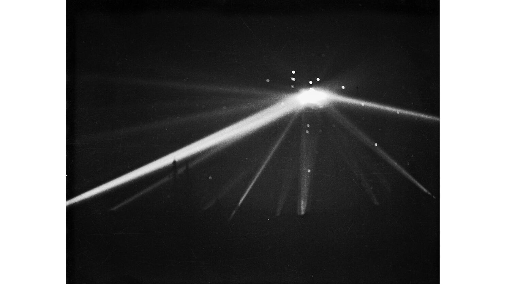
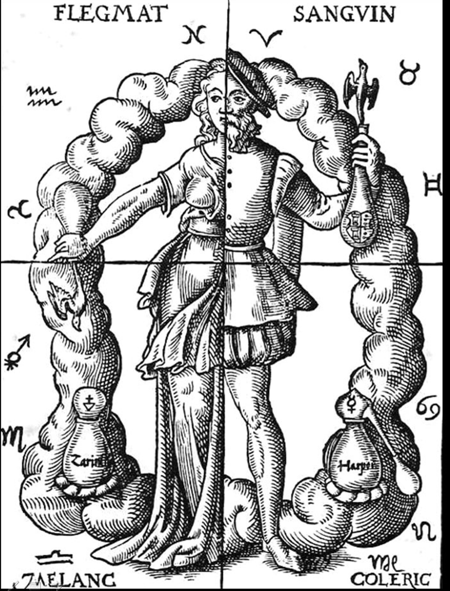

Avsnitt av Kuriosa!
Samtliga avsnitt finns där poddar finns! Nedan följer avsnittsbeskrivning, indexering, källhänvisningar osv.!
Avsnitt:


Avsnitt 3: UFO-incidenter
Efter att kommit igång igen efter 5 års vila följer här ett avsnitt om olika incidenter folk har haft med påstådda UFOn!
Avsnitt 2: Humoralpatologi och miasmateori
I det andra avsnittet, som kom 5 år efter pilotavsnittet pratar vi om forna medicinska teorier!
Avsnitt 1: Sentinelesöarna
I poddens pilotavsnitt behandlar vi norra sentinelsöns urbefolkning och deras historiska kontakter med övriga världen!